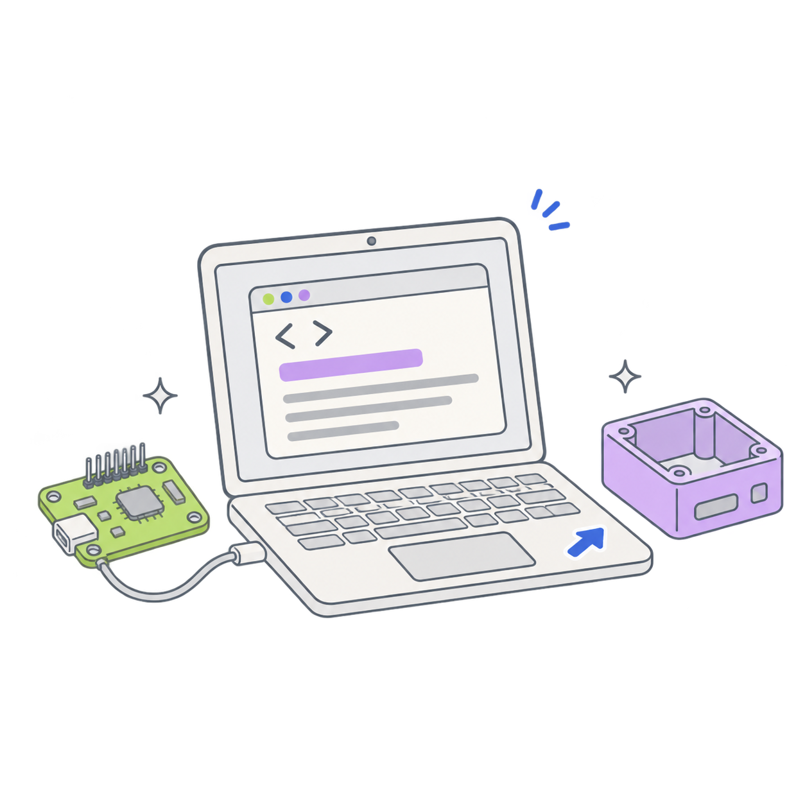
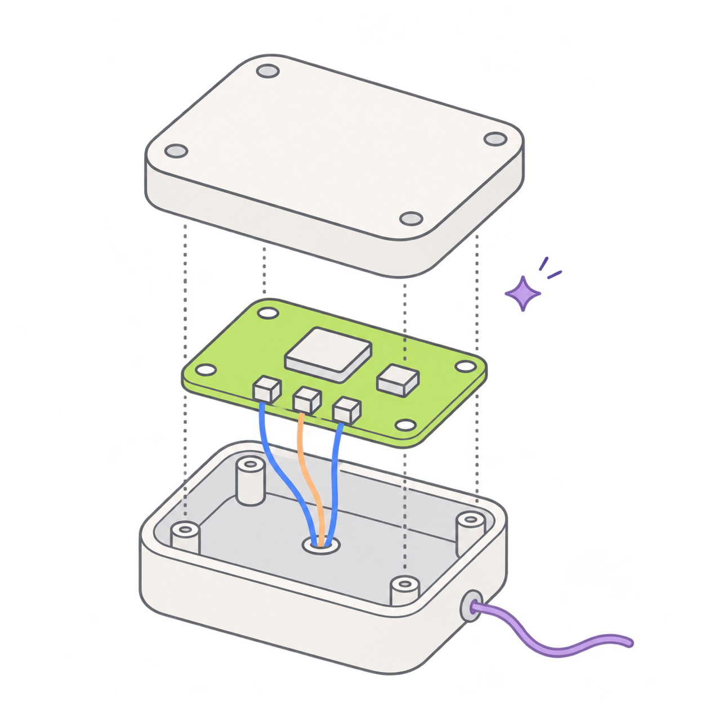

Обсудим
Что должно получиться, что уже есть и какие ограничения важно учесть.
Делаю сайты. Связываю сервисы.
Разбираюсь с железом.
От первых вопросов — до работающего решения.
Расскажите о задаче ↗
Код. Инфраструктура. Немного паяльника.
Сайты и веб-сервисы, которыми
можно пользоваться.
Лендинг, внутренний инструмент или приложение. Соберу интерфейс, логику и работу с данными. Могу подключиться к существующему проекту: разобраться, исправить и доработать.
Рутину можно поручить скрипту.
Свяжу сервисы через API, соберу бота, обработаю таблицы. Разберём, где теряется время, и превратим повторяющиеся действия в понятный сценарий.
От локального окружения
до работающего сервера.
Разверну приложение на Linux, настрою контейнеры, домен и HTTPS. Помогу подключить AI-инструменты и запустить локальную модель с учётом возможностей железа.

Можно запрограммировать.
А можно ещё и подержать.
Готовые платы, датчики, прошивка и пайка. Есть 3D-принтер — можно собрать прототип и напечатать для него корпус. Состав работ определим по задаче и доступным компонентам.
Что должно получиться, что уже есть и какие ограничения важно учесть.
Зафиксируем объём, стоимость, срок и способ проверить результат.
Покажу результат, передам код и объясню, как этим пользоваться.
Работаю с Claude и Codex. Обсуждаем результат, собираем решение, проверяем в деле.
Расскажите, что задумали.
Разберёмся, с чего начать.